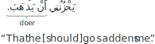

Not ready for study.
19 a-state incomplete-action verbs
19.1 Introduction
In chapter @ref(u-state-incomplete-action-verbs) we mentioned that incomplete action verbs have three states (like nouns). These states are called:
- The u-state
- The a-state
- The 0-state
We introduced the u-state incomplete-action verb in chapter @ref(u-state-incomplete-action-verbs). In this chapter we will study the a-state incomplete-action verb.
The u-state incomplete-action verb makes a plain statement. The a-state incomplete-action verb implies a wish or purpose. The a-state incomplete-action verb is used after the following articles:
- أَنْ ʾan
- لَنْ lan
- لِ li
- كَيْ kay
- حَتَّىٰ ḥattā
- إِذَنْ ʾid͡han
We will go over these cases in this chapter.
19.2 Forming the a-state incomplete-action verb
Here is the u-state incomplete action verb for the singular masculine absentee participant doer “he”:
يَفْعَلُ
yafɛalu
“he does”
Note that, because it is in the u-state, the its final letter ends with a u-mark ◌ُ. In order to form the a-state incomplete-action verb, we change the u-mark into a a-mark ◌َ, thus:
يَفْعَلَ
yafɛala
This is done for all participants whose doer pronoun is invisible and u-state verb ends with a u-mark ◌ُ.
For participants whose doer pronoun is followed by an extra ن in the u-state verb, this final ن is dropped in order to form the a-state incomplete-action verb. So, for example, the u-state incomplete-action verb:
يَفْعَلَانِ
yafɛalāni
“they2,m do”
becomes, for the a-state:
يَفْعَلَا
yafɛalā
Here is the complete table of the a-state incomplete-action verb for all doer participants.
| Participant | Incomplete-action verb doer pronoun | u-state incomplete-action verb | a-state incomplete-action verb |
|---|---|---|---|
| he | invisible | يَفْعَلُ | يَفْعَلَ |
| she | invisible | تَفْعَلُ | تَفْعَلَ |
| you1m | invisible | تَفْعَلُ | تَفْعَلَ |
| you1f | ي | تَفْعَلِينَ | تَفْعَلِي |
| I | invisible | أَفْعَلُ | أَفْعَلَ |
| they2m | ا | يَفْعَلَانِ | يَفْعَلَا |
| they2f | ا | تَفْعَلَانِ | تَفْعَلَا |
| you2 | ا | تَفْعَلَانِ | تَفْعَلَا |
| they3m | و | يَفْعَلُونَ | يَفْعَلُوا |
| they3f | نَ | يَفْعَلْنَ | يَفْعَلْنَ (same) |
| you3m | و | تَفْعَلُونَ | تَفْعَلُوا |
| you3f | نَ | تَفْعَلْنَ | تَفْعَلْنَ (same) |
| we | invisible | نَفْعَلُ | نَفْعَلَ |
Take note the following:
- The u-state and a-state verbs are the same for the feminine plural absentee and addressee participants:
- يَفْعَلْنَ (they3f)
- تَفْعَلْنَ (you3f)
- The a-state verbs for the masculine plural absentee and addressee participants have a final silent alif:
- يَفْعَلُوا (they3m)
- تَفْعَلُوا (you3m)
19.3 After أَنْ ʾan
أَنْ ʾan “that” is the main article which causes the following incomplete-action verb to be in the a-state. The other articles that we listed in the introduction are all either derived from أَنْ or include its meaning implicitly without expressing it.
19.3.1 Basic usage of أَنْ ʾan with the a-state incomplete-action verb
أَنْ often follows verbs that have a meaning of wishing or hoping. For example,
أَمَلَ ٱلطَّالِبُ أَنْ يَنْجَحَ.
ʾamala -ṭṭālibu ʾan yanjaḥ.
“The student hoped that he succeed.”
لَا can be used to negate the following a-state incomplete-action verb. لَا combines with أَنْ and assimilates with it to form أَلَّا ʾallā “that not”. For example,
أَمَرَ ٱلْأَبُ ٱلِٱبْنَ أَلَّا يَكْسَلَ.
ʾamara -lʾabu li-bna ʾallā yaksal.
“The father ordered the son that he not be lazy.”
Other than this لَا, أَنْ must directly precede the following a-state incomplete-action verb and must not be separated from it.
19.3.2 Grammatical equivalence of أَنْ clause with a doing verbal noun
In grammatical theory, أَنْ and the following verb form a clause that is equivalent in meaning to the doing verbal-noun of the verb. So in the example, أَمَلَ ٱلطَّالِبُ أَنْ يَنْجَحَ., the أَنْ clause is أَنْ يَنْجَحَ. It is equivalent to the doing verbal noun ٱلنَّجَاح. So the sentence is grammatically equivalent to
أَمَلَ ٱلطَّالِبُ ٱلنَّجَاحَ.
ʾamala -ṭṭālibu -nnajāḥ.
“The student hoped [for] success.”
This grammatical equivalence of the أَنْ clause with a noun aloows the أَنْ clause to take the place of a noun in various positions in a sentence. So, in the above example, the أَنْ clause is in place of the direct doee of the verb أَمَلَ:

We show other examples below where the أَنْ clause occurs in place of other noun positions.
As the subject:
which is grammatically equivalent to: نَجَاحَكَ هُوَ ٱلْمَقْصِدُ..
As the information:

which is grammatically equivalent to: ٱَلْمَقْصِدُ نَجَاحَكَ..
As a doer noun:
which is grammatically equivalent to: يَحْزُنُنِي ذَهَابُهُ..
In the i-state as the base noun in an annexation:

which is grammatically equivalent to: سَكَتَتْ مِنْ خَشْيَةِ غَضَبِهِ عَلَيْهَا..
In the i-state after a preposition:

which is grammatically equivalent to: رَغِبَ ٱلْغُلَامُ فِي أَكْلِ ٱلطَّعَامِ..
19.3.3 Option to drop the preposition before أَنْ
In the above example the verb رَغِبَ يَرْغَبُ takes an indirect doee after the preposition فِي. In such cases, where the أَنْ clause occurs after a preposition, it is common to drop the preposition as long as there is not resulting confusion in meaning. So, we can also say (without the preposition فِي) for the same meaning:
رَغِبَ ٱلْغُلَامُ أَنْ يَأْكُلَ ٱلطَّعَامَ.
“The boy desired that he eat the food.”
19.3.4 أَنْ meaning “lest”
Ocassionally, أَنْ is used with the meaning “lest”. For example:
قَتَلْتُ ٱلثُّعْبَانَ أَنْ يَقْتُلَنِي.
“I killed the serpent lest it kill me.”
19.3.5 أَنْ with the completed-action verb
أَنْ may also occur before a completed-action verb. Example:
بَلَغَنِي أَنْ رَجَعْتَ.
“That you have returned has reached me.”
19.3.6 Other types of أَنْ
There are other types of أَنْ in the Arabic language. They all have the basic meaning “that”. But they are used in different grammatical ways.
The أَنْ we have learned here is called the verbal noun أَنْ because of the equivalence of its clause with a doing verbal noun.
There is also another type of أَنْ called the lightened أَنْ that we will learn in section @ref(lightened-an).
There is also the explanatory أَنْ and the extra أَنْ that we will cover in chapter @ref(types-of-an).
19.4 After لِ li
19.4.1 The لِ of purpose
The article أَنْ may be attached to the preposition لِ li thus: لِأَنْ liʾan to give the purpose of the following verb. This لِ may be translated as “so that”. For example:
أَكَلَ لِأَنْ يَشْبَعَ.
“He ate so that he be sated.”
When لِ is thus used, أَنْ is optionally allowed to be dropped while its meaning is retained. لِ is then attached to the verb. So we can say, for the same meaning:
أَكَلَ لِيَشْبَعَ.
“He ate so that he be sated.”
But when using لَا to negate the verb, then أَنْ must be expressed, and the combination of لِ, أَنْ, and لَا is written as لِئَلَّا liʾallā. For example,
شَرِبَ ٱلْمَاءَ لِئَلَّا يَعْطَشَ.
“He drank the water so that he not be thirsty.”
By the way, the grammatical equivalence of أَنْ and a following a-state incomplete-action verb with a verbal noun of doing applies also to when لِ is used before (either an expressed or an implied) أَنْ. So, for example, if we have a sentence:
قَرَأَ ٱلْكِتَابَ لِيَعْلَمَ مَفْهُومَهُ.
or
قَرَأَ ٱلْكِتَابَ لِأَنْ يَعْلَمَ مَفْهُومَهُ.
“He read the book so that he know its meaning.”
Then, grammatically, أَنْ and what follows it may be expressed with the verbal noun of doing عِلْم thus:
قَرَأَ ٱلْكِتَابَ لِعِلْمِ مَفْهُومِهِ.
“He read the book for the knowledge of its meaning.”
19.4.2 The لِ of denial
There is a specific لِ, called the لِ of denial, which is used with a-state incomplete-action verbs and the verb كَانَ that we will discuss in section (TODO in كَانَ chapter).
19.5 After كَيْ kay
كَيْ kay is a preposition similar to لِ in meaning. It may be translated as “in order that”, or also as “so that”. It is also used before the a-state incomplete-action verb. The difference from لِ is that, when لِ is used with the a-state incomplete-action verb, expressing or dropping the أَنْ was optional. But with كَيْ, dropping the أَنْ is mandatory, while its meaning is retained. For example:
أَكَلَ كَيْ يَشْبَعَ.
“He ate in order that he be sated.”
لَا is used, as usual, to negate the verb and is attached to كَيْ thus: كَيْلَا kaylā. Example:
شَرِبَ ٱلْمَاءَ كَيْلَا يَعْطَشَ.
“He drank the water in order that he not be thirsty.”
The preposition لِ may be combined with كَيْ thus: لِكَيْ likay, for more or less the same meaning. For example:
أَكَلَ لِكَيْ يَشْبَعَ.
“He ate in order that he be sated.”
With لَا the whole combination is written as لِكَيْلَا likaylā. أَنْ must again be not be expressed.
Example:
شَرِبَ ٱلْمَاءَ لِكَيْلَا يَعْطَشَ.
“He drank the water in order that he not be thirsty.”
By the way, كَيْ and a following a-state incomplete-action verb are not directly replaced by a verbal noun of doing. So, for example, if we have a sentence:
قَرَأَ ٱلْكِتَابَ كَيْ يَعْلَمَ مَفْهُومَهُ.
“He read the book in order that he know its meaning.”
Then لِ is to be used in place of كَيْ if we wish to replace it and what follows with the verbal noun of doing عِلْم thus:
قَرَأَ ٱلْكِتَابَ لِعِلْمِ مَفْهُومِهِ.
“He read the book for the knowledge of its meaning.”
19.6 After حَتَّىٰ ḥattā
حَتَّىٰ ḥattā is a particle that can be used in multiple ways. Its basic meaning is “until” or “to the point of” or “even” where it indicates an extreme limit.
Before we discuss its use with a verb following it, we will take a short digression to discuss its use with a following noun.
19.6.1 حَتَّىٰ ḥattā with a following noun
Consider the following sentence:
أَكَلْتُ ٱلسَّمَكَةَ حَتَّىٰ رَأْسِهَا.
“I ate the fish until its head.”
حَتَّىٰ “until”, here, is used as a preposition. Therefore, رَأْس is in the i-state, as the noun following a preposition. The meaning of the sentence is that the fish was eaten all the way to its head. (Whether the head itself was eaten or not is ambiguous. The sentence itself admits both meanings.)
Consider now a variant of this sentence:
أَكَلْتُ ٱلسَّمَكَةَ حَتَّىٰ رَأْسَهَا.
“I ate the fish, even its head.”
رَأْس, here, is in the a-state because it is a direct doee of the verb أَكَلَ “ate”. The particle حَتَّىٰ “even”, here, is only a connector between the direct doees in much the same way as وَ “and”. (أَكَلْتُ ٱلسَّمَكَةَ وَرَأْسَهَا. “I ate the fish and its head.”)
Consider now yet another variant of this sentence:
أَكَلْتُ ٱلسَّمَكَةَ. حَتَّىٰ رَأْسُهَا [أَكَلْتُهَا].
“I ate the fish. Even its head [I ate].”
Now رَأْس is in the u-state because it is actually the subject of a new sentence, whose information is (an either expressed or implied) أَكَلْتُهَا “I ate it”. حَتَّىٰ, here, serves as an introductory particle to the second subject and does not affect the state of the following noun.
19.6.2 حَتَّىٰ ḥattā with a following verb
Just as حَتَّىٰ is used for different purposes with a following noun, so too is it used with different purposes with a verb following it.
19.6.2.1 حَتَّىٰ with a following a-state incomplete-action verb
When حَتَّىٰ is used with an expectation or purpose of a future action of the verb following it, then the verb following it is an a-state incomplete-action verb. This is done in the following two scenarios:
When حَتَّىٰ is used to indicate an extreme point at which the action of the following verb would occur, or is meant to occur. Here, حَتَّىٰ may be translated as “to the point of” and the verb following it is translated using “-ing”. For example,
قَرَأْتُ ٱلْقُرْآنَ حَتَّىٰ أَخْتِمَهُ.
“I read the Qurʾān to the point of finishing it.”يَغْضَبُ حَتَّىٰ يَهْرَبُوا مِنْهُ.
“He becomes angry to the point of their fleeing from him.”غَضِبَ حَتَّىٰ لَا يَمْلِكَ نَفْسَهُ.
“He became angry to the point of not controlling himself.”It is noteworthy that the use of حَتَّىٰ, here, implies only that the following action is meant to occur, or is at the point of being expected to occur. It doesn’t actually state that the action will actually occur, for something may prevent it from occurring in reality.1
Note, also, that لَا is not attached to حَتَّىٰ in حَتَّىٰ لَا.
Also, similar to the case of كَيْ, there is an assumed (but mandatorily unexpressed) أَنْ which is the real cause of the following incomplete-action verb being in the a-state. In fact, حَتَّىٰ, here, can be considered synonymous to إِلَىٰ أَنْ “to [the point] that”. So the above examples can be considered similar in meaning to:
قَرَأْتُ ٱلْقُرْآنَ إِلَىٰ أَنْ أَخْتِمَهُ.
يَغْضَبُ إِلَىٰ أَنْ يَهْرَبُوا مِنْهُ.
غَضِبَ إِلَىٰ أَلَّا يَمْلِكَ نَفْسَهُ.
When حَتَّىٰ is used with the meaning “to such a purpose that”. This is a similar meaning to كَيْ “in order that”. For example,
أَذْهَبُ إِلَيْهِ حَتَّىٰ يَأْمُرَنِي بِشَيْءٍ.
“I go to him to such a purpose that he order me [to do] something.”وَعَظَ ٱلْأَبُ ٱبْنَهُ حَتَّىٰ يَصْلُحَ.
“The father admonished his son to such a purpose that he be righteous.”Again, there is an assumed (but mandatorily unexpressed) أَنْ which is the real cause of the following incomplete-action verb being in the a-state.
Sometimes, the sentence itself may admit both of the above meanings. For example:
يَأْكُلُ حَتَّىٰ يَشْبَعَ.
“He eats to the point of being full.”
and/or
“He eats to the purpose that he be full.”
Context would be needed to determine which meaning or whether both meanings are intended.
19.6.2.2 حَتَّىٰ with no effect on the following verb
If حَتَّىٰ is not used with any expectation or purpose of a future action of the verb following it, then it has no effect on this verb. (It goes without saying that an implicit أَنْ is not assumed with حَتَّىٰ in this case.)
The verb following حَتَّىٰ in this case may even be a completed-action verb. For example:
أَكَلْتُ ٱلطَّعَامَ حَتَّىٰ شَبِعْتُ.
“I ate the food until I became full.”
When used with a following incomplete-action verb, the verb is put in the u-state and the meaning is that the action of the verb before حَتَّىٰ was done to such an extent that it caused the action of the verb following حَتَّىٰ to definitely occur. The action before حَتَّىٰ must necessarily be a past action, and the action following حَتَّىٰ must necessarily be a present (not a future) action. For example,
أَكَلْتُ ٱلطَّعَامَ حَتَّىٰ أَشْبَعُ.
“I ate the food to such an extent that I am (being) full.”
غَضِبَ حَتَّىٰ يَهْرَبُونَ مِنْهُ.
“He became so angry that they are fleeing from him.”
غَضِبَ حَتَّىٰ لَا يَمْلِكُ نَفْسَهُ.
“He became so angry that he is not controlling himself.”
Compare these examples with the corresponding ones in the previous sub-section that have an a-state incomplete action verb.
19.7 After لَنْ lan
لَا and أَنْ are combined to form لَنْ lan with the meaning “shall not”. لَنْ is used with the a-state incomplete-action verb to emphatically negate the future.
لَنْ تَذْهَبَ.
“You1m shall not go.”
19.8 After إِذَنْ ʾid͡han
TODO
19.9 After وَ, فَ, أَوْ, and ثُمَّ
19.9.1 As connectors
If the connectors وَ, فَ, أَوْ, and ثُمَّ occur after an a-state incomplete-action verb, then a second a-state incomplete-action verb (that doesn’t have its own أَنْ, etc.) may be either in the a-state or the u-state. For example,
أَرْغَبُ أَنْ أَحْضُرَ ٱلْمَجْلِسَ وَأَسْمَعَ. (أَسْمَعَ in a-state)
“I desire that I attend the session and [that] I listen.”
or
أَرْغَبُ أَنْ أَحْضُرَ ٱلْمَجْلِسَ وَأَسْمَعُ. (أَسْمَعَ in u-state)
“I desire that I attend the session and I will listen.”
19.9.2 With special meanings
وَ, فَ, أَوْ, and ثُمَّ also cause the following incomplete-action verb to be in the a-state in their own right, not simply as connectors. This is discussed in more detail in chapter TODO.
Sadan, Arik, The subjunctive mood in Arabic grammatical thought, 2012, p. 201↩︎